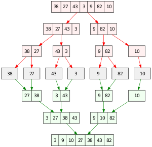

Độ phức tạp thời gian
Người viết: - Nguyễn Minh Hiển - Trường Đại học Công nghệ, ĐHQGHN
Reviewer: - Nguyễn Đức Kiên - Trường Đại học Công nghệ, ĐHQGHN - Phạm Hoàng Hiệp - University of Georgia - Ngô Nhật Quang - The University of Texas at Dallas
Giới thiệu¶
Thông thường khi viết một thuật toán, ta thường quan tâm nó chạy nhanh hay chậm, tốn nhiều bộ nhớ hay không.
Để ước lượng thời gian chạy của một thuật toán dựa trên kích thước đầu vào, chúng ta sử dụng khái niệm: Độ phức tạp thời gian của thuật toán.
Khái niệm độ phức tạp thời gian (ĐPT)¶
Độ phức tạp thời gian là một hàm \(f\) đo số thao tác cơ bản mà một thuật toán thực thi, với tham biến \(n\) là kích thước đầu vào: \(y = f(n)\)
Trên thực tế, đa phần các thuật toán sẽ được đánh giá theo trường hợp xấu nhất (worst case) vì sự đơn giản và thực tế của nó.
Một số khác vẫn được đánh theo trường hợp trung bình (average case). Ví dụ như khi: - Trường hợp xấu nhất ít xảy ra. Ví dụ với thuật toán Quick Sort. Trong trường hợp xấu nhất là khi ta luôn chọn phải phần tử chốt là phần tử lớn nhất hay nhỏ nhất của dãy, và ĐPT sẽ là \(O(n^2)\), nhưng xác suất trường hợp này xảy ra rất nhỏ. Còn trong phần lớn các trường hợp khác, ĐPT là \(O(n \log n)\). - Thuật toán có yếu tố ngẫu nhiên. Ví dụ như việc sử dụng sinh số ngẫu nhiên.
Trong từng trường hợp khác nhau của dữ liệu vào, việc tính toán chính xác hàm \(f(n)\) (với \(x\) tổng quát) thường rất khó. Và ở đây, chúng ta sử dụng độ phức tạp BigO hay O-lớn thay thế.
Độ phức tạp BigO¶
Xét 2 hàm số dương \(f(n)\) và \(g(n)\) Ta ký hiệu: \(f(n) = O(g(n))\)
Theo định nghĩa giải tích, ký hiệu trên tương đương với:
\[\lim\limits_{n \rightarrow \infty} \sup\dfrac{f(n)}{g(n)} < \infty\]Gọi là "hàm \(f\) không tăng (tiệm cận) nhanh hơn \(g\)".
Nói một cách dễ hiểu: \(f(n) = O(g(n))\) thì tồn tại hằng số \(c > 0\) để khi \(n\) đủ to \((\)với mọi \(n \ge n_0\) nào đó\()\) thì \(f(n) \le c\times g(n)\).
Ví dụ: * \(f(n) = 2n + 10\) là \(O(n)\) vì khi chọn \(c = 3\), chỉ cần \(n \ge 10\) thì \(f(n) = 2n + 10 \le 3n = c \times n\) * \(2n^2 + 10\) thì không phải là \(O(n)\) nữa, mà sẽ là \(O(n^2)\) (chọn \(c = 3\) và \(n \ge 4\))
Một số quy tắc tính toán ĐPT¶
Các quy tắc cơ bản¶
- Các phép sau được tính là lệnh đơn: phép đọc, viết, gán và các toán tử cơ bản (toán tử số học, quan hệ, logic, bit, gán, hỗn hợp) Các phép này có ĐPT \(O(1)\)
- Xét các lệnh
S1, S2, ..., Smvà ĐPT tương ứng của chúng là \(O(f_1), O(f_2), \ldots, O(f_m)\) với \(f_i\) là các hàm của dữ liệu đầu vào. \(E\) là một biểu thức logic.- Chuỗi các lệnh liên tiếp:
S1; S2; ...; Sm;có ĐPT \(O(f_1+f_2+ \ldots+f_m)\) - Khối lệnh rẽ nhánh
if E then S1 else S2có ĐPT \(O\left(\max(f_1,f_2)\right)\) - Các khối lặp:
while E do S1do S1 while Efor i := E1 to E2 do S1Tính ĐPT sẽ tương tự chuỗi các lệnh liên tiếp. Giả sử \(S_1\) được lặp lại \(g\) lần thì ĐPT sẽ là \(O(g \times f_1)\) với \(g\) cũng là hàm của dữ liệu đầu vào.
- Chuỗi các lệnh liên tiếp:
Một số chú ý quan trọng¶
- Tất cả các bài toán có ĐPT đa thức bậc \(k\) thì có ĐPT là \(O(n^k)\). Các hằng số, hệ số đa thức thường (không phải luôn luôn) được bỏ qua.
Ký hiệu \(\log n\) là logarit của \(n\) theo cơ số \(X\) (với \(X\) được định nghĩa bằng \(2, e, 10\) tùy sách). Tuy nhiên với phép chuyển cơ số \(\log_ab = \dfrac{\log b}{\log a}\) và \(\log b\) là một hằng số nhỏ nên ta sẽ không cần quá quan tâm \(X\) là cơ số bao nhiêu nữa).
- Coi \(\log n \sim n^\alpha\) với \(0 < \alpha < 1\)
- Dựa vào định nghĩa BigO, khi gặp một thuật toán có ĐPT là \(O(n)\), thì nói "thuật toán đó có ĐPT \(O(n^2)\)" không hề sai. Hay tổng quát hơn là một thuật toán có ĐPT là \(O(n^k)\) mà ta bảo "nó có ĐPT \(O(n^{k + \alpha})\)" cũng không hề sai \((\alpha > 0\) tùy ý\()\). Tuy nhiên, khi tính toán ĐPT, ta nên chọn \(k\) nhỏ nhất sao cho thuật toán có ĐPT \(O(n^k)\). Điều này sẽ giúp ta có cái nhìn chính xác hơn để đánh giá thuật toán.
- Khi gặp các hàm nhiều biến, ta vẫn tính toán như thường. Ví dụ: \(n\log^2 n + n^2 + m\log n + 1 +q^2 = O(n^2+m\log n +q^2)\)
- Một số độ phức tạp thường gặp trong lập trình thi đấu và các dữ liệu phù hợp để thuật toán chạy trong khoảng \(1s\) (khoảng \(10^8\) lệnh):
| ĐPT | Tên gọi | n |
|---|---|---|
| \(O(1)\) | Hằng số (Constant) | Tùy yêu cầu bài toán |
| \(O(\sqrt n)\) | \(10^{12}\) | |
| \(O(n)\) | Tuyến tính (Linear) | \(10^{8}\) |
| \(O(n\log n)\) | Linearithmic | \(10^6\) |
| \(O(n\sqrt n)\) | \(2 \times 10^5\) | |
| \(O(n^2)\) | Bậc 2 (Quadratic) | \(10^{4}\) |
| \(O(n^3)\) | Bậc 3 (Cubic) | \(500\) |
| \(O(n^4)\) | Bậc 4 (Quartic) | \(100\) |
| \(O(2^n)\) | Exponential | \(20\) |
| \(O(n!)\) | Giai thừa (factorial) | \(11\) |
Tuy nhiên, việc có ĐPT đáp ứng bộ dữ liệu như trong bảng trên, không có nghĩa thuật toán sẽ chạy nhanh (trong khoảng \(1s\)). Bạn đọc có thể xem chi tiết trong phần Mở rộng. Hằng số ĐPT
Ví dụ¶
Vòng lặp¶
Dựa vào các quy tắc, ta rút ra được một số mẹo khi tính ĐPT các vòng lặp:
1. Tính số lần lặp tối đa của một vòng lặp
2. Nếu các vòng lặp nối tiếp nhau thì cộng các cận đó với nhau
3. Nếu các vòng lặp lồng nhau thì nhân các cận với nhau
Ví dụ 1:
int sum = 0;
for (int i = 0; i < n; i++) sum += i;
for (int j = 0; j < n; j++) sum += j;
Ví dụ 2:
int sum = 0;
for (int i = 0; i < n; i++){
int j = 0;
while (j < n){
sum += j;
j++;
}
}
Ví dụ 3:
int sum = 0;
for (int i = 0; i < n; i++){
for (int j = 0; j < i; j++){
sum += j;
}
}
i lặp n lần, vòng j lặp tổng cộng \(1 + 2 + \ldots + n = \dfrac{n \times (n + 1)}{2}\) lần, nên ĐPT chung vẫn sẽ là \(\boldsymbol{O(n^2)}\) dù số phép tính đã được giảm đi khá nhiều.
Hai con trỏ¶
Cho một mảng a[] đã được sắp xếp. Xác định xem liệu có tồn tại \(2\) phần tử trong mảng mà cách nhau \(d\) đơn vị hay không.
Xét lời giải sau:
int j = 0;
for (int i = 0; i < n; i++) {
while ((j < n-1) && (a[i] - a[j] > d))
j++;
if (a[i] - a[j] == d){
cout << "Ton tai!";
return 0;
}
}
cout << "Khong ton tai";
Thoạt nhìn, nó khá giống với vòng lặp lồng ở Ví dụ i.2. và cho ra ĐPT \(O(n^2)\) nhưng thực chất, ĐPT nhỏ hơn vậy.
Phân tích: Ta xét trường hợp xấu nhất là khi "Khong ton tai":
- Trong Ví dụ i.2. biến j nhận giá trị từ 1 đến n, mỗi giá trị n lần, và ĐPT chung sẽ là \(O(n^2)\).
- Tuy nhiên trong Lời giải trên thì biến i chạy từ 1 đến n, mỗi giá trị xét \(1\) lần. Còn biến j chạy từ 1 đến n, mỗi giá trị xét tối đa \(1\) lần. Nên ĐPT trong trường hợp xấu nhất là \(O(2n)\) hay \(\boldsymbol{O(n)}\).
Nhận xét:
- Thuật toán trên sở dĩ gọi là \(2\) con trỏ bởi \(2\) biến \(i\) và \(j\) độc lập, dù cho vòng lặp \(j\) nằm trong vòng lặp \(i\).
- Khi gặp vòng lặp lồng, ta cần chú ý hơn, hoặc để chính xác thì nên cộng từng vòng lặp con bên trong. Sau này ta sẽ gặp các thuật toán tối ưu khá ảo như Knuth's Optimization hay Knapsack on tree, thì ta phải dùng cách này để tính ĐPT một cách chính xác hơn.
Tìm kiếm nhị phân¶
Cho một dãy được sắp xếp tăng dần, kiểm tra xem dãy có tồn tại giá trị target không.
Xét lời giải bằng tìm kiếm nhị phân như sau:
int binary_search(int a[], int sizeA, int target) {
int lo = 1, hi = sizeA;
while (lo <= hi) {
int mid = lo + (hi - lo)/2;
if (a[mid] == target)
return mid;
else if (a[mid] < target)
lo = mid+1;
else
hi = mid-1;
}
// không tìm thấy giá trị target trong mảng A
return -1;
}
Ở mỗi bước, kích thước của mảng cần tìm kiếm bị giảm đi một nửa. Sau \(\lceil \log_2 n \rceil\) bước, thì số phần tử của mảng là \(1\) và dừng tìm kiếm. Từ đó ĐPT của thuật toán là \(\boldsymbol{O(\log n)}\) với \(n\) là số phần tử ban đầu của không gian tìm kiếm.
Đệ quy¶
Thuật toán quay lui sinh cấu hình tổ hợp¶
Đây là một đoạn code sinh tất cả các hoán vị từ \(1\) đến \(n\) với \((n \le 10)\)
## include <bits/stdc++.h>
using namespace std;
const int N = 10;
int n, a[N + 5];
bool used[N + 5];
void print(){
for (int i = 1; i <= n; i++)
cout << a[i];
cout << '\n';
}
void backtrack(int i){
if (i == n + 1){
print();
return;
}
for (int j = 1; j <= n; j++) if (used[j] == false) {
a[i] = j;
used[j] = true;
backtrack(i + 1);
used[j] = 0;
}
}
int main()
{
cin >> n;
backtrack(1);
}
Phân tích:
Ta gọi hàm backtrack(1) nên i sẽ bắt đầu từ 1.
Tại vòng lặp j đầu tiên, ta xét tất cả các giá trị có thể gán cho a[1] (số hạng thứ 1) và đánh dấu đã sử dụng giá trị đó.
Và ta sẽ gán lần lượt a[2], ..., a[n].
Đến i = n + 1, chúng ta sẽ in ra kết quả và xét đến cấu hình tiếp. Việc in kết quả sẽ tốn 1 vòng \(O(n)\)
Vì thế ta có tổng cộng \(n \times (n - 1) \times \ldots \times 1 \times n = n \times n!\) phép toán. Hay ĐPT bài toán là \(\boldsymbol{O(n \times n!)}\).
Chia để trị¶
Đôi khi ĐPT của một thuật toán đệ quy không quá lớn như \(O(n!)\). Bạn đọc có thể thấy rõ với thuật toán sắp xếp Merge Sort (Sắp xếp trộn) sau đây:
MergeSort(mảng S) {
1. if (số phần tử của S <= 1)
return S;
2. chia đôi S thành hai mảng con S1 và S2 với số phần tử gần bằng nhau;
3. MergeSort(S1);
4. MergeSort(S2);
5. trộn S1 và S2 đã sắp xếp để thu được S mới đã sắp xếp;
6. return S mới;
}
Minh họa về cách thuật toán Merge Sort hoạt động:

Phân tích:
Gọi \(f(n)\) là ĐPT của hàm MergeSort(S) với \(n = |S|\)
Dễ thấy:
- Bước \(1, 2, 6\) đều mất \(O(1)\)
- Bước \(5\) sẽ mất \(n\) bước với hai con trỏ
- Bước \(3, 4\) sẽ mất \(f\left(\left\lfloor\dfrac{n}{2}\right\rfloor\right)\) và \(f\left(\left\lceil\dfrac{n}{2}\right\rceil\right)\)
Trong đó: \(\lfloor x \rfloor\) là số nguyên lớn nhất \(\le x\) (phần nguyên dưới). \(\lceil x \rceil\) là số nguyên nhỏ nhất \(\ge x\) (phần nguyên trên).
Từ đó, ta có : \(\begin{align} \begin{cases} f(1) = 1\\ f(n)= f\left(\left\lfloor\dfrac{n}{2}\right\rfloor\right) + f\left(\left\lceil\dfrac{n}{2}\right\rceil\right)+ \alpha n \, (\alpha \ge 1) \end{cases} \end{align}\)
ĐPT thuật toán này là \(f(n) = \boldsymbol{O(n\log n)}\) trong cả worst case và average case.
Để có được kết luận trên, ta đi chứng minh phát biểu sau:
Tồn tại hằng số \(c > 1\) nào đó mà với \(\forall n \le T\) ta có \(f(n)≤ n\log_2n + c\times n\)
Bằng quy nạp, ta có: - Với \(n = 1\), rõ ràng luôn tồn tại \(c''>1\) để \(f(1)<c'' \times 1\)
- Giả sử điều này đúng đến \(n = k - 1\) \((k \ge 2)\), ta cần chứng minh đúng với \(n = k\): - Thật vậy, \(\begin{align} f(k) &= f\left(\left\lfloor\frac{k}{2}\right\rfloor\right)+f\left(\left\lceil\frac{k}{2}\right\rceil\right) + \alpha k\\ \Rightarrow f(k) &\le 2f\left(\left\lceil\frac{k}{2}\right\rceil\right) + \alpha k\\ &\le \left( 2 \left\lceil\frac{k}{2}\right\rceil \times \log_2\left(\left\lceil\frac{k}{2}\right\rceil\right) + c' k \right) + \alpha k\\ &\le \left( 2 \times\frac{k}{2}\times \log_2\left(\frac{k}{2}\right) + \beta k \right) + (c'+\alpha) k\\ &= k \log_2 k - k + (c' + \alpha + \beta)\times k\\ &= k \log_2 k + c''\times k\\ \end{align}\)
Chọn \(c = \max\limits_{n \le T}(c'')\), ta được đpcm.
Bạn đọc có thể tham khảo dạng tổng quát của bài toán: Master theorem (Định lý thợ)
ĐPT và chuỗi nghịch đảo¶
Ví dụ 1¶
Tính độ phức tạp thời gian của đoạn code sau:
int cnt = 0;
for (int i = 1; i <= n; i++){
for (int j = i; j <= n; j += i){
cnt++;
}
}
-
\(x > \log(1 + x)\) với mọi \(x > 0\) nên \(\(\dfrac{1}{1} + \dfrac{1}{2} +\ldots+\dfrac{1}{n} \ge \log\dfrac{2}{1} + \log\dfrac{3}{2} +\ldots+ \log\dfrac{n+1}{n} = \log(n+1)\)\)
-
Lại có: \(\(\underbrace{\dfrac{1}{1}}_{=1} + \underbrace{\dfrac{1}{2} + \dfrac{1}{3}}_{< 2 \times \frac{1}{2} = 1} + \underbrace{\dfrac{1}{4} + \ldots + \dfrac{1}{7}}_{< 4 \times \frac{1}{4} = 1} + \ldots + \underbrace{\dfrac{1}{2^{\lfloor \log_2n \rfloor}} + \ldots + \dfrac{1}{n}}_{<1} < \lfloor\log_2n\rfloor + 1\)\)
- Chặn được thế này thì ta được kết quả là \(O\left(n \cdot \sum\limits_{i = 1}^{n} \dfrac{1}{i}\right) = \boldsymbol{O( n\log n)}\)
Nhận xét: Rõ ràng, \(\left\lfloor \dfrac{n}{i} \right\rfloor\) là số số \(\le n\) và chia hết cho \(i\). Vì thế với \(\tau(n)\) là số ước dương của \(n\) thì bản chất độ phức tạp của bài toán trên là: \(\(f(n) = \tau(1) + \tau(2) + \ldots + \tau(n) = \sum\limits_{i = 1}^{n} \left\lfloor \dfrac{n}{i} \right\rfloor \sim n\log n\)\) \(f(n)\) cũng chính là số cặp số nguyên dương \((i, j)\) thỏa mãn: \(i \cdot j \le n\).
Ví dụ 2¶
Tính độ phức tạp thời gian của giải thuật sàng nguyên tố Erathosenes:
for (int i = 2; i * i <= n; i++) is_prime[i] = true;
for (int i = 2; i <= n; i++) if (is_prime[i]){
for (int j = i * 2; j <= n; j += i){
is_prime[j] = false;
}
}
Mở rộng¶
Họ hàm O(n)¶
\(O(n)\) thuộc một họ hàm Bachmann–Landau. Và trong họ hàm này, có một số hàm cũng được dùng để đánh giá ĐPT là \(\Omega(n)\) (Omega lớn) và \(\Theta(n)\) (Theta lớn).
Tuy \(\Theta(n)\) đánh giá cận chính xác \((\)không phải cận trên như \(O(n))\), nhưng ta vẫn sử dụng \(O(n)\) vì sự phổ biến và dễ viết của nó.
Hằng số ĐPT¶
-
Với hầu hết các thuật toán thường gặp trong thực tế, giá trị hằng số của \(O\) (hoặc \(Θ\)) thường là khá nhỏ. Nếu một thuật toán là \(O(n^2)\), ĐPT chính xác là vào khoảng \(10n^2\) chứ không phải \(10^3n^2\). Nói cách khác: nếu hằng số quá lớn thì thường là các hằng số đó có liên quan tới các đại lượng có sẵn trong đề bài. Khi đó, ta cần gán một tên gọi cho hằng số đó và thêm nó vào đánh giá ĐPT, thay vì bỏ qua.
- Ví dụ: thay vì để \(O(1000 \times n)\) rồi suy ra ĐPT là \(O(n)\) thì nên viết thành \(O(q\times n)\) với \(q = 1000\)
- Trong toán học, \(O(10^9)\) vẫn là \(O(1)\). Tuy nhiên điều này chỉ đúng khi \(n\) cực lớn \((\infty)\).
- Còn trong lập trình thi đấu, ta hay gặp bộ dữ liệu \(n \le 10^8\), nên rõ ràng \(O(10^9)\) sẽ chạy lâu hơn \(O(n)\). Vì thế trong Ví dụ, việc đặt \(q = 1000\) là hoàn toàn phù hợp.
-
Cũng như vừa đề cập, hằng số của thuật toán trong ĐPT cũng có ảnh hưởng đến thời gian thực thi.
-
Hai thuật toán có ĐPT ngang nhau không có nghĩa là chúng chạy nhanh như nhau.
- Ví dụ khi xét việc sắp xếp \(n\) số nguyên,
std::sort,std::priority_queue,std::set/std::mapđều có ĐPT \(O(n\log n)\). - Tuy nhiên khi so sánh về thời gian chạy thì
std::sort\(<\)std::priority_queue\(<\)std::set/std::map
- Ví dụ khi xét việc sắp xếp \(n\) số nguyên,
-
Thuật toán có ĐPT bậc cao hơn không có nghĩa là chúng chạy chậm hơn trong mọi bộ dữ liệu.
- Ví dụ điển hình là hàm
std::sortcủa C++. Thuật toán chủ yếu vẫn làQuick-sort- \(O(n\log n)\). Và để tối ưu, thì với bộ dữ liệu nhỏ, hàm sẽ sử dụngInsert-Sort- \(O(n^2)\). Còn khi chọn phần tử chốt củaQuick-sortkhông đẹp, thì sẽ sử dụngHeap-Sort- \(O(n\log n)\) thay thế.
- Ví dụ điển hình là hàm
- Vì thế, trong từng trường hợp, ta nên chú ý chọn thuật toán cho phù hợp nhất để tối ưu thời gian chạy chương trình. Và đặc biệt khi sử dụng các hàm trong thư viện sẵn có hay các code sẵn có thì nên hiểu cơ bản cách hoạt động và tốc độ của nó.
-
Lời kết¶
Với lập trình viên, độ phức tạp thời gian là một công cụ hữu ích để ước chừng thời gian thực thi của một thuật toán, hay so sánh giữa các thuật toán với nhau. Trong các kỳ thi lập trình, kích cỡ của tập dữ liệu thường được cho trước trong đề bài. Dựa vào điều đó, thí sinh có thể ước chừng độ phức tạp rồi tìm ra thuật toán phù hợp. Hoặc là khi đã nghĩ ra một vài thuật toán thì liệu thuật toán nào đáng để cài đặt? Nên chọn những thuật toán nào để cài đặt? ĐPT BigO - phân tích dựa trên tiệm cận là một công cụ mạnh mẽ. Nhưng Big O bỏ qua các hằng số, và đôi khi các hằng số lại quan trọng. Vì thế phải sử dụng nó một cách khôn khéo nhất để đạt hiệu quả cao trong lập trình.